ONIOM is the hybrid method of Morokuma and co-workers that enables different levels of theory to be applied to different parts of a molecule/system and combined to produce a consistent energy expression. The objective is to perform a high-level calculation on just a small part of the system and to include the effects of the remainder at lower levels of theory, with the end result being of similar accuracy to a high-level calculation on the full system.
The NWChem ONIOM module implements two- and three-layer ONIOM models for use in energy, gradient, geometry optimization, and vibrational frequency calculations with any of the pure quantum mechanical methods within NWChem. At the present time, it is not possible to perform ONIOM calculations with either solvation models or classical force fields. Nor is it yet possible to compute properties except as derivatives of the total energy.
Using the terminology of Morokuma et al., the full molecular geometry including all atoms is referred to as the ``real'' geometry and it is treated using a ``low''-level of theory. A subset of these atoms (referred to as the ``model'' geometry) are treated using both the ``low''-level and a ``high''-level of theory. A three-layer model also introduces an ``intermediate'' model geometry and a ``medium'' level of theory.
The two-layer model requires a high and low level of theory and a real and model molecular geometry. The energy at the high-level of theory for the real geometry is estimated as
E(High,Real) = E(Low,Real) + [E(High,Model) - E(Low,Model)].
The three-layer model requires high, medium and low levels of theory,
and real, intermediate and model geometries and the corresponding
energy estimate is
E(High,Real) = E(Low,Real) + [E(High,Model) - E(Medium,Model)]
+ [E(Medium,Inter) - E(Low,Inter)].
When does ONIOM work well? The approximation for a two-layer model will be good if
The input options are as follows
ONIOM
HIGH <string theory> [basis <string basis default "ao basis">] \
[ecp <string ecp>] [input <string input>]
[MEDIUM <string theory> [basis <string basis default "ao basis">] \
[ecp <string ecp>] [input <string input>]]
LOW <string theory> [basis <string basis default "ao basis">] \
[ecp <string ecp>] [input <string input>]
MODEL <integer natoms> [charge <double charge>] \
[<integer i1 j1> <real g1> [<string tag1>] ...]
[INTER <integer natoms> [charge <double charge>] \
[<integer i1 j1> <real g1> [<string tag1>] ...]]
[VECTORS [low-real <string mofile>] [low-model <string mofile>] \
[high-model <string mofile>] [medium-model <string mofile]\
[medium-inter <string mofile>] [low-inter <string mofile>]]
[PRINT ...]
[NOPRINT ...]
END
which are described in detail below.
For better validation of user input, the HIGH,
LOW and MODEL directives must always be specified. If
the one of the MEDIUM or INTER directives are specified,
then so must the other.
The geometry and total charge of the full or real system should be
specified as normal using the geometry directive (see Section
6). If 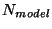 of the atoms are to be included in
the model system, then these should be specified first in the
geometry. Similarly, in a three-layer calculation, if there are
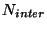 atoms to be included in the intermediate system, then
these should also be arranged together at the beginning of the
geometry. The implict assumption is that the model system is a subset
of the intermediate system which is a subset of the real system. The
number of atoms to be included in the model and intemediate systems
are specified using the MODEL and INTER directives.
Optionally, the total charge of the model and intermediate systems may
be adjusted. The default is that all three systems have the same
total charge.
Example 1. A two-layer calculation on 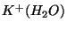 taking the potassium ion as the model system. Note that no bonds are broken so no link atoms are introduced. The real geometry would be specified with potassium (the model) first.
geometry autosym
K 0 0.00 1.37
O 0 0.00 -1.07
H 0 -0.76 -1.68
H 0 0.76 -1.68
end
and the following directive in the ONIOM input block indicates that
one atom (implicitly the first in the geometry) is in the model system
model 1
MODEL and INTER directives describe the broken bonds
including scale factors for placement of the link atom
and, optionally, the type of link atom. The type of link atom
defaults to hydrogen, but any type may be specified (actually here you
are specifying a geometry tag which is used to associate a geometrical
center with an atom type and basis sets, etc.. See section
6.3).
For each broken bond specify the numbers of the two atoms (i and j),
the scale factor (g) and optionally the tag of the link atom. Link
atoms are placed along the vector connecting the the first to the
second atom of the bond according to the equation
Example 2. A calculation on acetaldehyde (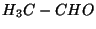) using aldehyde (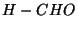) as the model system. The covalent bond between the two carbon atoms is broken and a link atom must be introduced to replace the methyl group. The link atom is automatically generated -- all you need to do is specify the atoms in the model system that are also in the real system (here ) and the broken bonds. Here is the geometry of acetaldehyde with the of aldehyde first
geometry
C -0.383 0.288 0.021
H -1.425 0.381 0.376
O 0.259 1.263 -0.321
H 0.115 -1.570 1.007
H -0.465 -1.768 -0.642
H 1.176 -1.171 -0.352
C 0.152 -1.150 0.005
end
There are three atoms (the first three) of the real geometry included
in the model geometry, and we are breaking the bond between atoms 1
and 7, replacing atom 7 with a hydrogen link atom. This is all
accomplished by the directive
model 3 1 7 0.709 H
Since the default link atom is hydrogen there is actually no need to
specify the ``H''.
See also Section 23.6.3 for a more complex example.
The link atoms are appended to the atoms of the model or intermediate systems in the order that the broken bonds are specified in the input. This is of importance only if manually constructing an initial guess.
The two-layer model requires both the high-level and low-level theories be specified. The three-layer model also requires the medium-level theory. Each of these includes a theory (such as SCF, MP2, DFT, CCSD, CCSD(T), etc.), an optional basis set, an optional ECP, and an optional string containing general NWChem input.
"ao basis". That for the medium level defaults to the
high-level basis, and the low-level basis defaults to the medium-level
basis. Other wavefunction parameters are obtained from the standard
wavefunction input blocks. See 23.6.2 for an example.
If an effective core potential is specified in the usual fashion (see Section 8) outside of the ONIOM input then this will be used in all calculations. If an alternative ECP name (the name specified on the ECP directive in the same manner as done for basis sets) is specified on one of the theory directives, then this ECP will be used in preference for that level of theory. See Section 23.6.2 for sample input.
For many purposes, the ability to specify the theory, basis and effective core potential is adequate. All of the options for each theory are determined from their independent input blocks. However, if the same theory (e.g., DFT) is to be used with different options for the ONIOM theoretical models, then the general input strings must be used. These strings are processed as NWChem input each time the theoretical model is invoked. The strings may contain any NWChem input, except for options pertaining to ONIOM and the task directive. The intent that the strings be used just to control the options pertaining to the theory being used.
A word of caution. Be sure to check that the options are producing the desired results. Since the NWChem database is persistent and the ONIOM calculations happen in an undefined order, the input strings should fully define the calculation you wish to have happen.
For instance, if the high model is DFT/B3LYP/6-311g** and the low model is DFT/LDA/3-21g, the ONIOM input might look like this
oniom
model 3
low dft basis 3-21g input "dft\; xc\; end"
high dft basis 6-311g** input "dft\; xc b3lyp\; end"
end
The empty XC directive restores the default LDA
exchange-correlation option (see Section 11.3). Note that
semi-colons and other quotation marks inside the input string must be
preceded by a backslash to avoid special interpretation.
See Section 23.6.4 for another example.
Symmetry should work just fine as long as the model and intermediate regions respect the symmetry -- i.e., symmetry equivalent atoms need to be treated equivalently. If symmetry equivalent atoms must be treated in separate regions then the symmetry must be lowered (or completely switched off).
The VECTORS directive in the ONIOM block is different to that
elsewhere in NWChem. For each of the necessary combinations of theory
and geometry you can specify a different file for the molecular
orbitals. By default each combination will store the MO vectors in
the permanent directory using a file name created by appending to the
name of the calculation the following string
".lrmos"
".limos"
".lmmos"
".mimos"
".mmmos"
".hmmos"
If special measures must be taken to converge the initial SCF, DFT or
MCSCF calculation for one or more of the systems, then initial vectors
may be saved in a file with the default name, or another name may be
specified using the VECTORS directive. Note that subsequent
vectors (e.g., from a geometry optimization) will be written back to
this file, so take a copy if you wish to preserve it.
To generate the initial guess for the model or intermediate systems
it is necessary to generate the geometries which is most readily
done, if there are link atoms, by just running NWChem on the
input for the ONIOM calculation on your workstation. It will
print these geometries before starting any calculations which
you can then terminate.
E.g., in a calculation on Fe(III) surrounded by some ligands, it is
hard to converge the full (real) system from the atomic guess so as to
obtain a  configuration for the iron atom since the
configuration for the iron atom since the  orbitals
are often nominally lower in energy than some of the ligand orbitals.
The most effective mechanism is to converge the isolated Fe(III) and
then to use the fragment guess (see Section 10.5.1) as a
starting guess for the real system. The resulting converged molecular
orbitals can be saved either with the default name (as described above
in this section), in which case no additional input is necessary. If
an alternative name is desired, then the
orbitals
are often nominally lower in energy than some of the ligand orbitals.
The most effective mechanism is to converge the isolated Fe(III) and
then to use the fragment guess (see Section 10.5.1) as a
starting guess for the real system. The resulting converged molecular
orbitals can be saved either with the default name (as described above
in this section), in which case no additional input is necessary. If
an alternative name is desired, then the VECTORS directive may
be used as follows
vectors low-real /u/rjh/jobs/fe_ether_water.mos
Restart of ONIOM calculations does not currently work as smoothly as we would like. For geometry optimizations that terminated gracefully by running out of iterations, the restart will work as normal. Otherwise, specify in the input of the restart job the last geometry of the optimization. The Hessian information will be reused and the calculation should proceed losing at most the cost of one ONIOM gradient evaluation. For energy or frequency calculations, restart may not currently be possible.
A simple two-layer model changing just the wavefunction with one link atom.
This reproduces the two-layer ONIOM (MP2:HF) result from Dapprich et al. for the reaction 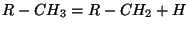 with 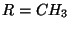 using 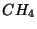 as the model . The geometries of 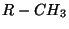 and 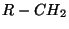 are optimized at the DFT-B3LYP/6-311++G** level of theory, and then ONIOM is used to compute the binding energy using UMP2 for the model system and HF for the real system. The results, including MP2 calculations on the full system for comparison, are as given in Table 23.1
|
The following input first performs a calculation on 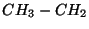, and then on 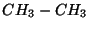. Note that in the second calculation we cannot use the full symmetry since we are breaking the C-C bond in forming the model system (the non-equivalence of the methyl groups is perhaps more apparent if we write ).
start
basis spherical
H library 6-311++G**; C library 6-311++G**
end
title "ONIOM Me-CH2"
geometry autosym
H -0.23429328 1.32498565 0.92634814
H -0.23429328 1.32498565 -0.92634814
C -0.13064265 0.77330370 0.00000000
H -1.01618703 -1.19260361 0.00000000
H 0.49856072 -1.08196901 -0.88665533
H 0.49856072 -1.08196901 0.88665533
C -0.02434414 -0.71063687 0.00000000
end
scf; uhf; doublet; thresh 1e-6; end
mp2; freeze atomic; end
oniom
high mp2
low scf
model 3 3 7 0.724
end
task oniom
title "ONIOM Me-Me"
geometry # Note cannot use full D3D symmetry here
H -0.72023641 0.72023641 -1.16373235
H 0.98386124 0.26362482 -1.16373235
H -0.26362482 -0.98386124 -1.16373235
C 0.00000000 0.00000000 -0.76537515
H 0.72023641 -0.72023641 1.16373235
H -0.98386124 -0.26362482 1.16373235
H 0.26362482 0.98386124 1.16373235
C 0.00000000 0.00000000 0.76537515
end
scf; rhf; singlet; end
oniom
high mp2
low scf
model 4 4 8 0.724
end
task oniom
This input reproduces the ONIOM optimization and vibrational frequency calculation of 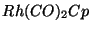 of Dapprich et al. The model system is 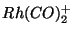. The low theory is the Gaussian LANL2MB model (Hay-Wadt n+1 ECP with minimal basis on Rh, STO-3G on others) with SCF. The high theory is the Gaussian LANL2DZ model (another Hay-Wadt ECP with a DZ basis set on Rh, Dunning split valence on the other atoms) with DFT/B3LYP. Note that different names should be used for the basis set and ECP since the same mechanism is used to store them in the database.
start
ecp LANL2DZ_ECP
rh library LANL2DZ_ECP
end
basis LANL2DZ spherical
rh library LANL2DZ_ECP
o library SV_(Dunning-Hay); c library SV_(Dunning-Hay); h library SV_(Dunning-Hay)
end
ecp Hay-Wadt_MB_(n+1)_ECP
rh library Hay-Wadt_MB_(n+1)_ECP
end
# This is the minimal basis used by Gaussian. It is not the same
# as the one in the EMSL basis set library for this ECP.
basis Hay-Wadt_MB_(n+1) spherical
Rh s; .264600D+01 -.135541D+01; .175100D+01 .161122D+01; .571300D+00 .589381D+00
Rh s; .264600D+01 .456934D+00; .175100D+01 -.595199D+00; .571300D+00 -.342127D+00
.143800D+00 .410138D+00; .428000D-01 .780486D+00
Rh p; .544000D+01 -.987699D-01; .132900D+01 .743359D+00; .484500D+00 .366846D+00
Rh p; .659500D+00 -.370046D-01; .869000D-01 .452364D+00; .257000D-01 .653822D+00
Rh d; .366900D+01 .670480D-01; .142300D+01 .455084D+00; .509100D+00 .479584D+00
.161000D+00 .233826D+00
o library sto-3g; c library sto-3g; h library sto-3g
end
charge 0
geometry autosym
rh 0.00445705 -0.15119674 0.00000000
c -0.01380554 -1.45254070 1.35171818
c -0.01380554 -1.45254070 -1.35171818
o -0.01805883 -2.26420212 2.20818932
o -0.01805883 -2.26420212 -2.20818932
c 1.23209566 1.89314720 0.00000000
c 0.37739392 1.84262319 -1.15286640
c -1.01479160 1.93086461 -0.70666350
c -1.01479160 1.93086461 0.70666350
c 0.37739392 1.84262319 1.15286640
h 2.31251453 1.89903673 0.00000000
h 0.70378132 1.86131979 -2.18414218
h -1.88154273 1.96919306 -1.35203550
h -1.88154273 1.96919306 1.35203550
h 0.70378132 1.86131979 2.18414218
end
dft; grid fine; convergence gradient 1e-6 density 1e-6; xc b3lyp; end
scf; thresh 1e-6; end
oniom
low scf basis Hay-Wadt_MB_(n+1) ecp Hay-Wadt_MB_(n+1)_ECP
high dft basis LANL2DZ ecp LANL2DZ_ECP
model 5 charge 1
print low
end
task oniom optimize
task oniom freq
A three layer example combining CCSD(T), and MP2 with two different quality basis sets, and using multiple link atoms.
The full system is tetra-dimethyl-amino-ethylene (TAME) or (N(Me)2)2-C=C-(N(Me)2)2. The intermediate system is (NH2)2-C=C-(NH2)2 and H2C=CH2 is the model system. CCSD(T)+aug-cc-pvtz is used for the model region, MP2+aug-cc-pvtz for the intermediate region, and MP2+aug-cc-pvdz for everything.
In the real geometry the first two atoms (C, C) are the model system (link atoms will be added automatically). The first six atoms (C, C, N, N, N, N) describe the intermediate system (again with link atoms to be added automatically). The atoms have been numbered using comments to make the bonding input easier to generate.
To make the model system, four C-N bonds are broken between the ethylene fragment and the dimethyl-amino groups and replaced with C-H bonds. To make the intermediate system, eight C-N bonds are broken between the nitrogens and the methyl groups and replaced with N-H bonds. The scaling factor could be chosen differently for each of the bonds.
start
geometry
C 0.40337795 -0.17516305 -0.51505208 # 1
C -0.40328664 0.17555927 0.51466084 # 2
N 1.87154979 -0.17516305 -0.51505208 # 3
N -0.18694782 -0.60488524 -1.79258692 # 4
N 0.18692927 0.60488318 1.79247594 # 5
N -1.87148219 0.17564718 0.51496494 # 6
C 2.46636552 1.18039452 -0.51505208 # 7
C 2.48067731 -1.10425355 0.46161675 # 8
C -2.46642715 -1.17982091 0.51473105 # 9
C -2.48054940 1.10495864 -0.46156202 # 10
C 0.30027136 0.14582197 -2.97072148 # 11
C -0.14245927 -2.07576980 -1.96730852 # 12
C -0.29948109 -0.14689874 2.97021079 # 13
C 0.14140463 2.07558249 1.96815181 # 14
H 0.78955302 2.52533887 1.19760764
H -0.86543435 2.50958894 1.88075113
... and 22 other hydrogen atoms on the methyl groups
end
basis aug-cc-pvtz spherical
C library aug-cc-pvtz; H library aug-cc-pvtz
end
basis aug-cc-pvdz spherical
C library aug-cc-pvtz; H library aug-cc-pvtz
end
oniom
high ccsd(t) basis aug-cc-pvtz
medium mp2 basis aug-cc-pvtz
low mp2 basis aug-cc-pvdz
model 2 1 3 0.87 1 4 0.87 2 5 0.87 2 6 0.87
inter 6 3 7 0.69 3 8 0.69 4 11 0.69 4 12 0.69 \
5 13 0.69 5 14 0.69 6 9 0.69 6 10 0.69
end
task oniom
A two-layer model for anthracene (a linear chain of three fused benzene rings) using benzene as the model system. The high-level theory is DFT/B3LYP/TZVP with exact Coulomb. The low level is DFT/LDA/DZVP2 with charge fitting.
Note the following.
start
geometry
symmetry d2h
C 0.71237329 -1.21458940 0.0
C -0.71237329 -1.21458940 0.0
C 0.71237329 1.21458940 0.0
C -0.71237329 1.21458940 0.0
C -1.39414269 0.00000000 0.0
C 1.39414269 0.00000000 0.0
H -2.47680865 0.00000000 0.0
H 2.47680865 0.00000000 0.0
C 1.40340535 -2.48997027 0.0
C -1.40340535 -2.48997027 0.0
C 1.40340535 2.48997027 0.0
C -1.40340535 2.48997027 0.0
C 0.72211503 3.64518615 0.0
C -0.72211503 3.64518615 0.0
C 0.72211503 -3.64518615 0.0
C -0.72211503 -3.64518615 0.0
H 2.48612947 2.48094825 0.0
H 1.24157357 4.59507342 0.0
H -1.24157357 4.59507342 0.0
H -2.48612947 2.48094825 0.0
H 2.48612947 -2.48094825 0.0
H 1.24157357 -4.59507342 0.0
H -1.24157357 -4.59507342 0.0
H -2.48612947 -2.48094825 0.0
end
basis small
h library DZVP_(DFT_Orbital)
c library DZVP_(DFT_Orbital)
end
basis fitting
h library DGauss_A1_DFT_Coulomb_Fitting
c library DGauss_A1_DFT_Coulomb_Fitting
end
basis big
h library TZVP_(DFT_Orbital)
c library TZVP_(DFT_Orbital)
end
oniom
model 8 1 9 0.75 2 10 0.75 3 11 0.75 4 12 0.75
high dft basis big input "unset \"cd basis\"\; dft\; xc b3lyp\; end"
low dft basis small input "set \"cd basis\" fitting\; dft\; xc\; end"
end
task oniom